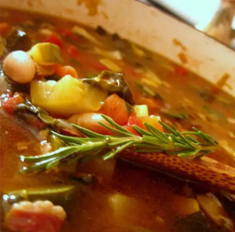

Home
Previous Page
Minestrone Soup

Minestrone Soup
"This minestrone soup recipe features vegetables, beans, and pasta in a rich, tomato-based broth."
- Margarine
- Chopped onion
- Chopped carrots
- Chopped celery
- Chicken broth
- Cannellini beans
- Stewed tomatoes
- Cubed potatoes
- Shredded cabbage
- Dried parsley
- Tomato paste
- Garlic
- Salt
- Elbow macaroni
- Parnesan cheese
- Melt margarine in a heavy stockpot over medium heat. Add onion, carrots, and celery; sauté until beginning to soften, 3 to 4 minutes. Add broth, beans, tomatoes, potatoes, cabbage, parsley, tomato paste, garlic, and salt; bring to a boil.
- Simmer for 30 minutes
- Laddle and garnish with Parmesan cheese